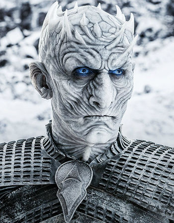

I'm The Night King
I was the master and the first of the White Walkers, having existed since the age of the First Men. I was also the supreme leader of the army of the dead. Сreated a team that can kill everyone
Experience
-
some time ago
Winterfell Inc.
- Merge "White Walkers" and Winterfell Inc.
-
a long time ago
Social organization "White Walkers"
- Head of HR department "13 walkers"
- Killings in Hardhome
- Fight on Frozen lake
- Attack to Three-Eyed Raven cave
-
a long-long time ago
Social organization "Children of the Forest"
- Fight with the First People
- Developed the author's method of tansforming people to Wights
- Initiator of Long Night
Languages
- AN Ancient
- FO Forestry
Skills
- Killing
- Necromancy
- Mind reading
- Destroing metal weapons
- Fire resistance
Character
Silent and modest introvert.Result oriented.
Despite this, I did display some emotion at times. I appeared quite pleased when he picked up Craster's last son and transformed him into a new White Walker.
Likes
- Creating Snowstorms
- Rescue from fears
- Mind controlls